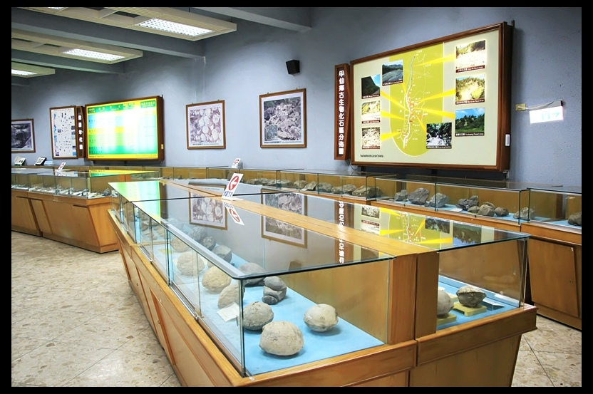
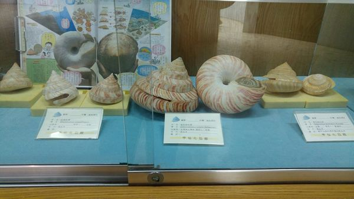
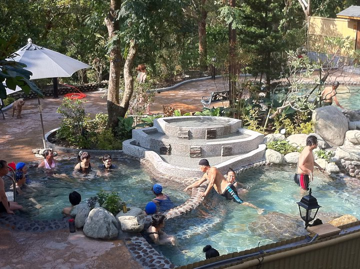
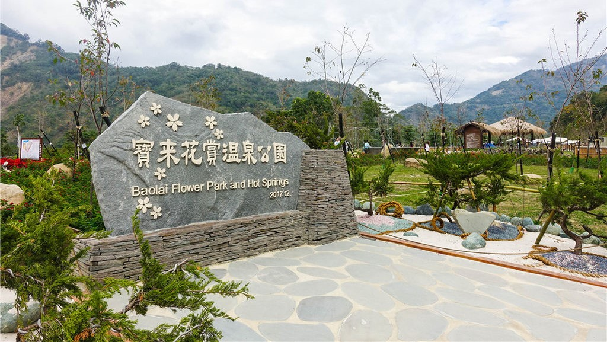
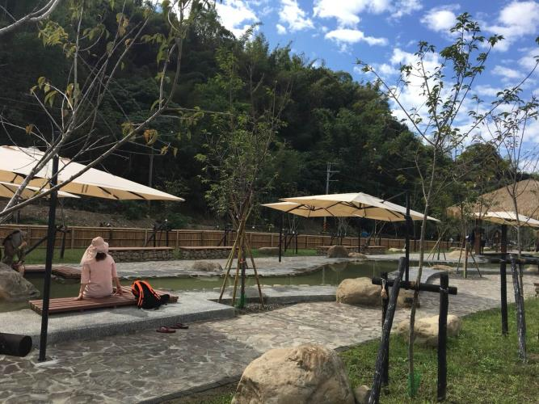
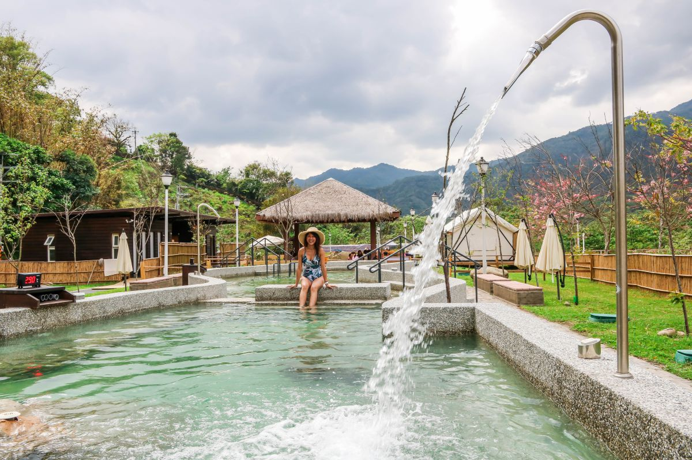
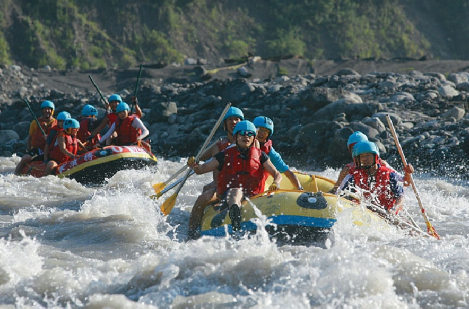
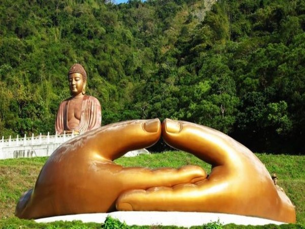

甲仙化石館位於高雄市甲仙鄉的和安村四德巷，以陳列甲仙鄉出土之化石為主。
館藏六千餘件的化石，出土化石主要屬於中新世晚期。
因蓬萊造山運動將台灣桂竹林內海的海底沉積岩推擠隆起，因此有大量當時的貝類化石在甲仙出土。

是台灣最重要、產量最豐富的古海化石區，為指標性地方專業博物館深具學術及觀光價值。

甲仙小奇芋冰老店在地經營超過40年，販售各式芋頭製品，是在地人極推的甲仙芋冰創始店。
同時是花蓮近期新興景點，擁有戲水道、生態浮島等設施，為炎炎夏日親子戲水、踏青與認識自然生態的好去處。

芋冰的話2球40元超便宜，完全真材實料還吃的到芋頭塊，口感綿密又不會過甜，吃過保證你一定會懷念的!!

石洞溫泉行政區屬高雄市桃源區，遊客必須由六龜的寶來溫泉區進入經過六公里的產業道路才可到達。
溫泉位於寶來溪上游，群山環抱，遺世獨立，使得這裡充滿著原始幽靜的氣息。

石洞溫泉為台灣罕見的洞穴溫泉，屬鹼性碳酸泉，水溫約44度，泉質澄澈，可飲可浴。


花賞溫泉公園於2017年12月1日至17日開放入園體驗手足湯，同年12月18日至22日休園，12月23日盛大開園。

溫泉井水溫達52度、PH值約7.2、水質屬於弱鹼性，為優質的碳酸氫鹽泉。
其特色無色透明、泉質溫和；並因能軟化皮膚表層，洗後肌膚觸感嫩滑，故有「美肌之湯」的別名。

所謂擂茶，這個"擂"字，有"磨"的亦稱，其實跟台語的擂有著相同的意思。
但不要把全部倒進去，一次擂完。必須是一道道工法慢慢擂才行!

要擂的材料有黑白芝麻+茶葉+米粒>花生+紅豆>抹茶粉依序加進去裡面攪拌。

差不多磨好後，服務員就會端著一壺熱水來了，可以開始沖泡剛剛我們所製作的擂茶囉！

荖濃溪始於民國75年，源於玉山東峰，是莫拉克風災前經觀光局評定為東亞最刺激好玩的泛舟河道。

沿著中央山脈蜿蜒流向西南，流經高雄市六龜區，在六龜區境內造就了縱谷、台地沖積扇等地形，並形成了激流、溫泉、瀑布、斷崖等獨特的特殊景觀，因而帶動了高雄荖濃溪泛舟活動的崛起。

位於不老溫泉區附近有座「彩虹山大佛(六龜大佛)」，由彩虹山宗教基金會設立，自2000開始便開始興建，經過15年的興建過程，終於在2015年12月完工並開放自由參觀。
共使用了167噸銅雕鑄造而成的大佛鑄像，採閉眼坐像，高20公尺(約七層樓)。

莊嚴慈目聳立於山林間，居高臨下俯瞰眾生，充滿寧靜祥和的氣度。
 333桃園市龜山區德明路5號
333桃園市龜山區德明路5號 TEL:(03)1234-5678
TEL:(03)1234-5678 EMAIL:123456789@gmail.com
EMAIL:123456789@gmail.com